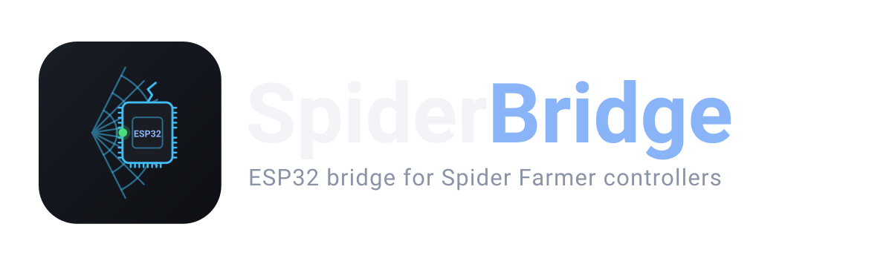
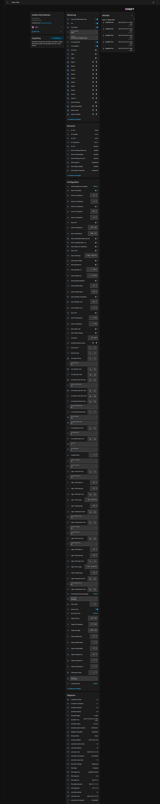
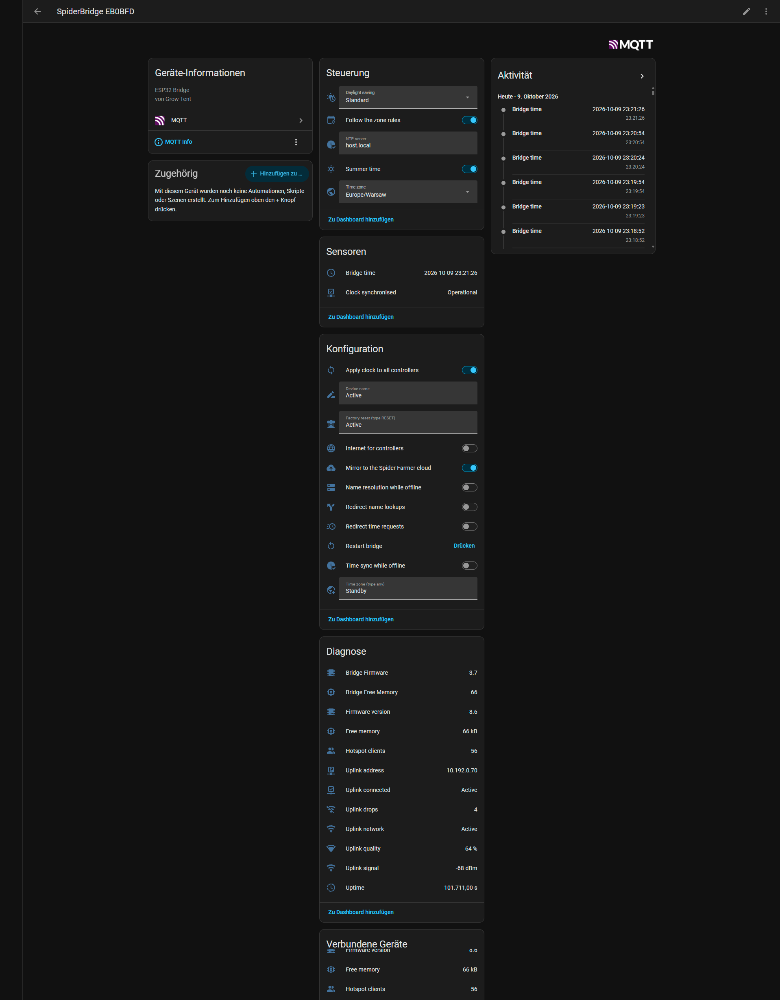
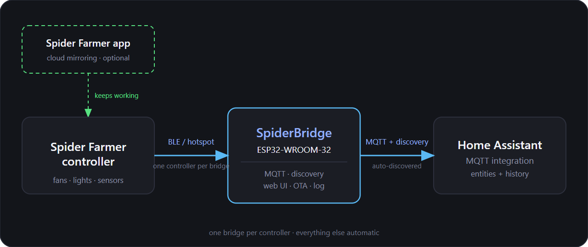
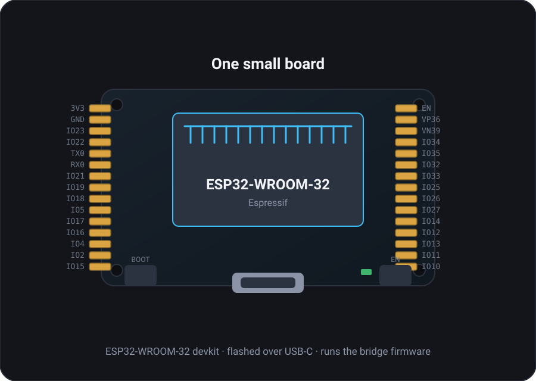

SpiderBridge is an ESP32 firmware that talks to a Spider Farmer GGS controller over Bluetooth and mirrors every value and every setting into Home Assistant — 183 entities, auto-discovered over MQTT. No app, no cloud, no Raspberry Pi.
Install now Live demo GitHubThe bridge announces itself over MQTT Discovery. The controller appears as its own device with the complete app feature set — lights, fans, climate, outlets, day/night targets, alarms, calibration and grow plan.


Both device pages are captured whole, one image each, top to bottom.
Using the Spider Farmer app? Keep it — you only have to switch the controller's Wi-Fi to the bridge's hotspot once. The app keeps working through the bridge (the controller's own cloud link can even be turned off in the web interface), and Home Assistant gets the full picture at the same time.
153 entities per controller plus 30 on the bridge itself. Native HA entities, so automations, dashboards, voice assistants and the Energy dashboard all work.
On/off, brightness, Manual / Schedule / PPFD mode, window, target brightness, fade time, PPFD target with min/max brightness, dim and off-threshold.
Circulation fan and exhaust fan: speed, Manual / Schedule / Cycle / Environment modes, schedule and cycle windows, standby speed, oscillation, natural wind, CO₂-close.
Heater, humidifier and dehumidifier, plus all ten outlets of the power strips — every one of them a switch you can automate.
Targets and deadbands for temperature, humidity and CO₂ by day and night, and all 13 alarm types with their min/max ranges.
Air temperature, humidity, CO₂, VPD, PPFD, substrate temperature/humidity and EC — plus controller clock, uptime, restarts and free memory.
Multi-stage plans from templates with labels, dates, colours and reminders; timezone, automatic daylight saving and one-click time sync.
Three steps. No Spider Farmer account, no vendor server, no phone in the loop.
Open the web installer in Chrome or Edge, connect the board over USB and click Connect. Your Wi-Fi credentials are sent along through Improv Serial while you install.
Point the bridge at your MQTT broker (Settings → MQTT). The diagnostics entities show up immediately; the controller follows once it is paired.
In the web interface open Control → Bluetooth: scan, pick your controller and confirm. The bridge hands over the hotspot credentials and the controller appears in Home Assistant with all of its entities.
The controller and the bridge talk the encrypted GGS protocol over Bluetooth; the bridge talks MQTT to Home Assistant. Optionally, controllers that join the bridge's hotspot are relayed to the real Spider Farmer cloud — or completely cut off from it.


A ~€10 ESP32 board with 4 MB flash is enough — developed and tested with the ESP32-WROOM-32 board below. Any other ESP32 with 4 MB flash works as well.
Supported ESP32 board (Amazon)
Ordering through the affiliate link supports the project at no extra cost to you. A Spider Farmer GGS controller with Bluetooth and any Home Assistant installation with MQTT complete the picture.
Six pages, running entirely on the ESP32: settings, control, status, network, MQTT log and firmware update. The live demo is the real interface rendered offline with random data.